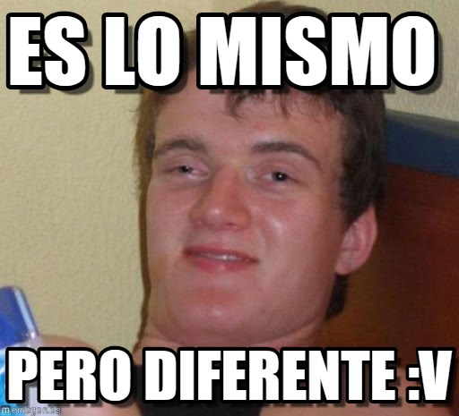

Introduccion
Hugo Stiven Laguna
Diseñaor y Desarrollador Front-End
PHP ASP.Net C# Angular CSS
Fotografia, Viajar, Pasar tiempo con mi familia, Futbol.
Historia
CSS3 permitio cambiar la manera en que el navegador muestra un cambio de estilos de un elemento HTML, al darnos la posibilidad de graduar esta transición
Animaciones en CSS
¿ Por que usamos JQuery para hacer animaciones ?
Transiciones y animaciones
Diferencia entre animación y Transición
transition nos permite determinar la forma en que una o varias propiedades cambian su valor de manera progresiva
animation: nos permite ejecutar el cambio de una o varias propiedades de manera secuencial
Transition
transition: { property } { duration } { timing-function } { delay } .
Valores por defecto: { all } { 0s } { ease } { 0 }
transition-property
Especifica la o las propiedades que tendrán un efecto de Transición ,
Permite el uso de varios valores separado por comas, para llamar todas las
Propiedades de utilza ‘all’.
transition-duration
Determina cuánto tiempo durará el efecto de transición en terminar
Permite el uso de varios valores separado por comas,
permite valores
Numericos en Segundos (s) o Milesimas (ms).
transition-delay
Especificamos cuanto tiempo tarda en comenzar la transición. Recibe numéricos en Segundos (s) o Milésimas (ms).
transition-timing-function
Especifica la curva de velocidad que tendrá el efecto de transición, Permite el uso de varios valores reparado por comas
Esta propiedad recibe funciones como cubic-bezier() o steps().
También recibe en algunos navegador frames() pero se considera ya obsoleta esta función.
http://blog.teamtreehouse.com/css-sprite-sheet-animations-stepsCubic-bezier (x1, y1, x2, y2)
Se denomina curvas de Bézier a un sistema para el trazado de dibujos técnicos. Su denominación es en honor a Pierre Bézier, quien ideó un método de descripción matemática de las curvas que se comenzó a utilizar con éxito en los programas de CAD

Cubic-bezier (x1, y1, x2, y2)
Podemos utilizar valores ya cargados Linear; Ease; Ease-in; Ease-out; ease-in-out; los navegadores también nos permiten editar el cubic-bezier(). Podemos crear efectos de rebote poniendo valores menores a 0 en Y1 y valores mayores a 1 en Y2. los valores de X siempre deben ser positivos y nunca mayor a 1. Tiempo siempre debe ser progresivo.
http://cubic-bezier.com/Steps( number, start|end ):
al igual que lo hace frames(), especificamos cuantos pasos ( fotogramas o frames ) son y los saltos serán inmediatos entre cada uno, es utilizado mucho para hacer películas con sprites, además podemos determinar la dirección de la animación. Tiene dos valores cargados step-start [ steps( 1 , start ) ] & step-end [ steps( 1 , end ) ]
Animation
animation: { name } { duration } { timing-function } { delay } { iteration-count } { direction } { fill-mode } { play-state }
Valores por defecto: { none } { 0s } { ease } { 0s } { 1 } { normal } { none } { running }
@keyframes ( puntos de trayectoria )
esta regla permite declarar un animación [ @keyframes identifier {} ]. Dentro del kayframe podemos controlar los pasos intermedios de una secuencia de animación. Contiene una lista de selectores ( porcentajes 0% a 100% ó from | to que son iguales a 0% y 100%).
animation-name
Especificamos el nombre identificador del @keyframe , permite insertar varios @keyframes separados por coma.
animation-duration
Igual que en Transition.
animation-timing-function
Igual que en transition-timing-function. Pero su aplicación necesita más interpretaciòn.

animation-delay
Igual que en Transition.
animation-iteration-count
definimos cuántas veces se le repetirá la animación, recibe valores numericos y permite el valor ´infinite’ .
animation-direction
Parecido a los que hacíamos con steps( ) podemos determinar la dirección de la animación , por donde de comenzar , por donde acabar y en caso de tener repeticiones, donde comenzar la repetición.
animation-fill-mode
Especifica qué propiedades debe tener el objeto cuando la animación no está en reproducción.
none no aplica ningún estilo diferente a los que tiene el objeto fuera del @keyframe.
forwards El elemento retiene los estilos con lo que terminó la animación en caso de que tenga fin la animación.
backwards El elemento obtiene los valores que se le asignan inicialmente en la animación incluso si tiene un ‘delay’, pero depende de la dirección de la animación.
both aplica los valores de ‘forwards & backwards’ y aplica para cualquier dirección.
animation-play-state
especifica el estado de la animación, pero su valor no es dinámico como tal, en CSS así ya lleguemos al 100% de la animación y no tenga mas repeticiones, no significa para esta propiedad que la animación está detenida. Sus valores son paused y running
Como reiniciar animaciones
Quitando la clase que contiene ‘animation’ y volviendo a asignarla en JS.
Cambiando el valor por ‘none’ y luego por ‘’ a ‘animation-name’ (webkitAnimation ) en JS.
Utilizando pseudo elementos y sus eventos para cambia los valores de la propiedad animation del elemento animado CSS.
Transform:
Sirve para transforma el elemento libremente a través de sus vértices.
Puede ser afectado por diferentes transformaciones separadas por un espacio.
Los traslados de los elementos por medio de Transform no afecta ningún elemento a su alrededor por que se renderiza en una capa diferente del documento.
Depende de los valores de transform-origin, transform-style & perspective . La posición del elemento también puede alterar el resultado de la transformación por ejemplo position:absolute por qué sus límites pueden llegar a ser abstractos. link